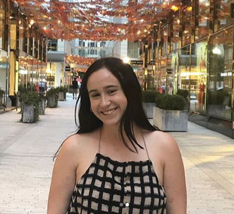

Curious reporter always digging deeper
My name is Victoria Ebner and I am a junior journalism major at the University of Maryland. I currently work for UMD's independent student newspaper, The Diamondback, where I cover political advocacy and social issues. I am interested in politics, social justice, activism, LGBTQIA+ topics and everything in between.
Report on underground stories on the Youth and Education beat covering topics such as poverty, homelessness and foster care as it pertains to the D.C. area.
Write and report stories surrounding political advocacy, social issues, student rights. Research and present three pitches weekly and meet a quota of two articles per week. Spend approximetly 18 hours editing other staffer's stories, not including reporting my own stories.
Write stories and create photo galleries about local happenings such as award ceremonies, Fourth of July celebrations and school graduations. Write descriptive calendar listings upcoming community events and update it weekly with new content. Collaborate with four other interns on an investigative project about faulty town recycling practices.
Attend weekly pitch meetings, write assigned stories about various campus events, assist in the editing process.
Cover 11 home and away games, conduct player and coach interviews, turn in story within an hour from the game's conclusion.
University of Maryland, Bachelor's Degree in Journalism